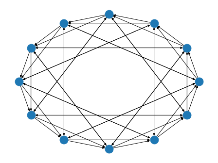
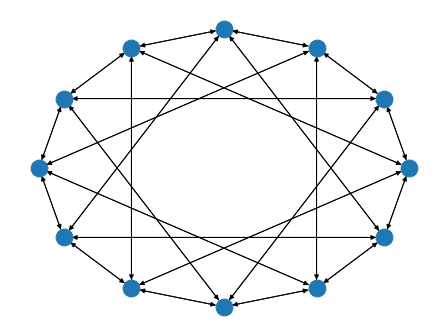
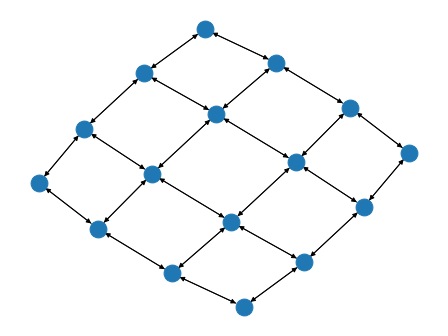
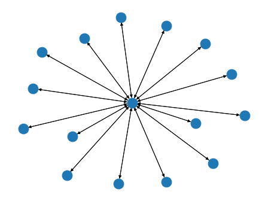
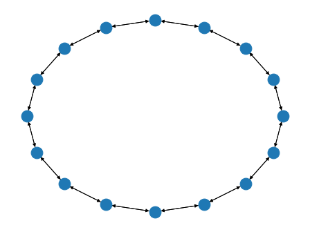

Topology Related Utility Functions¶
-
bluefog.common.topology_util.List¶ The central part of internal API.
This represents a generic version of type ‘origin’ with type arguments ‘params’. There are two kind of these aliases: user defined and special. The special ones are wrappers around builtin collections and ABCs in collections.abc. These must have ‘name’ always set. If ‘inst’ is False, then the alias can’t be instantiated, this is used by e.g. typing.List and typing.Dict.
alias of List
-
bluefog.common.topology_util.Tuple¶ Tuple type; Tuple[X, Y] is the cross-product type of X and Y.
Example: Tuple[T1, T2] is a tuple of two elements corresponding to type variables T1 and T2. Tuple[int, float, str] is a tuple of an int, a float and a string.
To specify a variable-length tuple of homogeneous type, use Tuple[T, …].
alias of Tuple
-
bluefog.common.topology_util.Dict¶ The central part of internal API.
This represents a generic version of type ‘origin’ with type arguments ‘params’. There are two kind of these aliases: user defined and special. The special ones are wrappers around builtin collections and ABCs in collections.abc. These must have ‘name’ always set. If ‘inst’ is False, then the alias can’t be instantiated, this is used by e.g. typing.List and typing.Dict.
alias of Dict
-
bluefog.common.topology_util.Iterator¶ The central part of internal API.
This represents a generic version of type ‘origin’ with type arguments ‘params’. There are two kind of these aliases: user defined and special. The special ones are wrappers around builtin collections and ABCs in collections.abc. These must have ‘name’ always set. If ‘inst’ is False, then the alias can’t be instantiated, this is used by e.g. typing.List and typing.Dict.
alias of Iterator
-
bluefog.common.topology_util.IsTopologyEquivalent(topo1: networkx.classes.digraph.DiGraph, topo2: networkx.classes.digraph.DiGraph) → bool¶ Determine two topologies are equivalent or not.
Notice we do not check two topologies are isomorphism. Instead checking the adjacenty matrix is the same only.
-
bluefog.common.topology_util.GetRecvWeights(topo: networkx.classes.digraph.DiGraph, rank: int) → Tuple[float, Dict[int, float]]¶ Return a Tuple of self_weight and neighbor_weights for receiving dictionary.
-
bluefog.common.topology_util.GetSendWeights(topo: networkx.classes.digraph.DiGraph, rank: int) → Tuple[float, Dict[int, float]]¶ Return a Tuple of self_weight and neighbor_weights for sending dictionary.
-
bluefog.common.topology_util.PowerTwoRingGraph(size: int) → networkx.classes.digraph.DiGraph¶ Generate graph topology such that each points only connected to a point such that the index difference is power of 2.
Example: A PowerTwoRingGraph with 12 nodes:
>>> import networkx as nx >>> from bluefog.common import topology_util >>> G = topology_util.PowerTwoRingGraph(12) >>> nx.draw_circular(G)

-
bluefog.common.topology_util.isPowerOf(x, base)¶
-
bluefog.common.topology_util.PowerGraph(size: int, base: int = 2) → networkx.classes.digraph.DiGraph¶ Generate graph topology such that each points only connected to a point such that the index difference is power of base. (Default is 2)
Example: A PowerGraph with 12 nodes:
>>> import networkx as nx >>> from bluefog.common import topology_util >>> G = topology_util.PowerGraph(12) >>> nx.draw_circular(G)

-
bluefog.common.topology_util.SymmetricPowerGraph(size: int, base: int = 4) → networkx.classes.digraph.DiGraph¶ Generate symmeteric graph topology such that for the first half of nodes only connected to a point such that the index difference is power of base (Default is 4) and the connectivity for the second half of nodes just mirrored to the first half.
Example: A SymmetricPowerGraph with 12 nodes
>>> import networkx as nx >>> from bluefog.common import topology_util >>> G = topology_util.SymmetricPowerGraph(12) >>> nx.draw_circular(G)

-
bluefog.common.topology_util.MeshGrid2DGraph(size: int, shape: Optional[Tuple[int, int]] = None) → networkx.classes.digraph.DiGraph¶ Generate 2D MeshGrid structure of graph.
Assume shape = (nrow, ncol), when shape is provided, a meshgrid of nrow*ncol will be generated. when shape is not provided, nrow and ncol will be the two closest factors of size.
For example: size = 24, nrow and ncol will be 4 and 6, respectively. We assume nrow will be equal to or smaller than ncol. If size is a prime number, nrow will be 1, and ncol will be size, which degrades the topology into a linear one.
Example: A MeshGrid2DGraph with 16 nodes:
>>> import networkx as nx >>> from bluefog.common import topology_util >>> G = topology_util.MeshGrid2DGraph(16) >>> nx.draw_spring(G)

-
bluefog.common.topology_util.StarGraph(size: int, center_rank: int = 0) → networkx.classes.digraph.DiGraph¶ Generate star structure of graph.
All other ranks are connected to the center_rank. The connection is bidirection, i.e. if the weight from node i to node j is non-zero, so is the weight from node j to node i.
Example: A StarGraph with 16 nodes:
>>> import networkx as nx >>> from bluefog.common import topology_util >>> G = topology_util.StarGraph(16) >>> nx.draw_spring(G)

-
bluefog.common.topology_util.RingGraph(size: int, connect_style: int = 0) → networkx.classes.digraph.DiGraph¶ Generate ring structure of graph (uniliteral). Argument connect_style should be an integer between 0 and 2, where 0 represents the bi-connection, 1 represents the left-connection, and 2 represents the right-connection.
Example: A RingGraph with 16 nodes:
>>> import networkx as nx >>> from bluefog.common import topology_util >>> G = topology_util.RingGraph(16) >>> nx.draw_circular(G)

-
bluefog.common.topology_util.FullyConnectedGraph(size: int) → networkx.classes.digraph.DiGraph¶ Generate fully connected structure of graph. For example, a FullyConnectedGraph with 16 nodes:
Example: A FullyConnectedGraph 16 nodes:
>>> import networkx as nx >>> from bluefog.common import topology_util >>> G = topology_util.FullyConnectedGraph(16) >>> nx.draw_spring(G)

-
bluefog.common.topology_util.IsRegularGraph(topo: networkx.classes.digraph.DiGraph) → bool¶ Dtermine a graph is regular or not, i.e. all nodes have the same degree.
-
bluefog.common.topology_util.GetDynamicSendRecvRanks(topo: networkx.classes.digraph.DiGraph, self_rank: int) → Iterator[Tuple[int, List[int]]]¶ A utility function to generate 1-outoging send rank and corresponding recieving rank(s).
- Parameters
topo (nx.DiGraph) – The base topology to generate dynamic send and receive ranks.
self_rank (int) – The self rank.
- Yields
Iterator[Tuple[int, List[int]]] – send_rank, recv_ranks.
Example
>>> from bluefog.common import topology_util >>> topo = topology_util.PowerTwoRingGraph(10) >>> gen = topology_util.GetDynamicSendRecvRanks(topo, 0) >>> for _ in range(10): >>> print(next(gen))